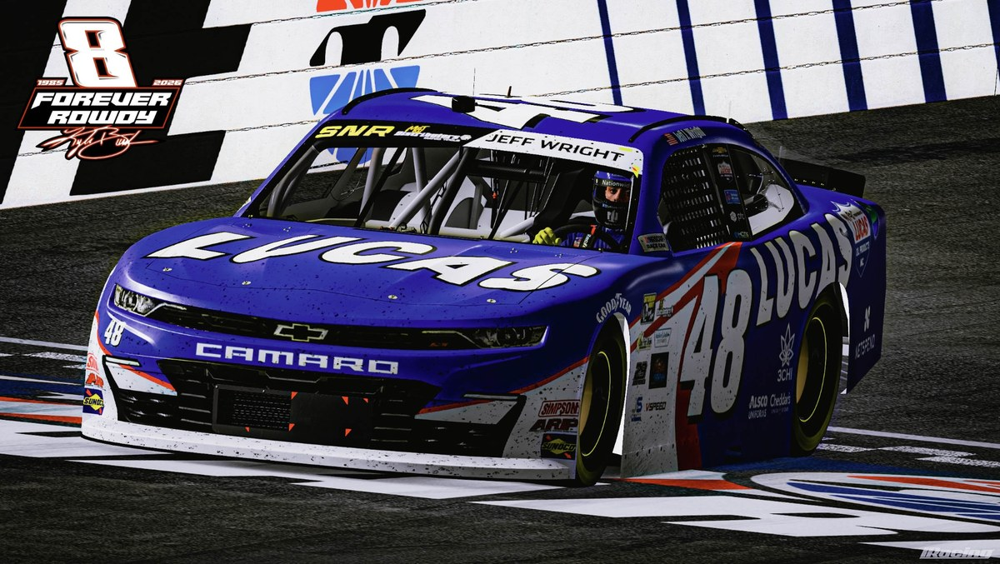

Wright Dominates the TeamBoss 300 at Charlotte Motor Speedway

Jeff J. Wright put on a masterclass performance Saturday Night at Charlotte Motor Speedway, leading a dominant 150 of 200 laps to claim victory in the TeamBoss 300 — his 4th win of the Season 6 campaign for the Saturday Night Racing League Cup Series.
Starting from 3rd, Wright wasted no time working his way to the front and was never truly challenged once he took command. Phillip Brewer, who started from the pole, led the opening 20 laps before Wright seized control. Seth Hatchel led 12 laps, while Adam Cabot led 8 — including Lap 18, where the Saturday Night Racing League and VSPEED paused to pay tribute to NASCAR legend Kyle Busch — #8 — with a special “Forever Rowdy” segment in honor of the two-time Cup Series champion who tragically passed away earlier in the week on Thursday.
The lone caution of the night flew on Lap 136 for an incident between Chad Clinger and Joshua Banks. The field returned to green on Lap 140, setting up a dramatic 60-lap fuel mileage run to the checkered flag. Wright and Adam Cabot waged a battle to the end, but Wright had enough in the tank to hold off Cabot and take the victory.
When the checkered flag flew, it was Wright in Victory Lane, followed by Cabot in 2nd — his best finish of the season — and Ryan Carwile charging from 15th to complete the podium in 3rd. Bailey Turner finished 4th while championship leader A.J. Stravato came home 7th after starting 18th.
Despite his dominant victory and 4th win of the season, Wright sits just 7th in the championship standings — a deficit largely due to DNFs at EchoPark Speedway and Dover Motor Speedway caused by internet and power related issues that cost him valuable points. A.J. Stravato leads the championship with 460 points, 17 ahead of Bailey Turner (443) and 34 ahead of Kenny Kibbey (426) as the top three remain tightly bunched heading into the second half of the season.
The SNR Cup Series continues next Saturday Night at Nashville Superspeedway. Tune into VSPEED for full live coverage!